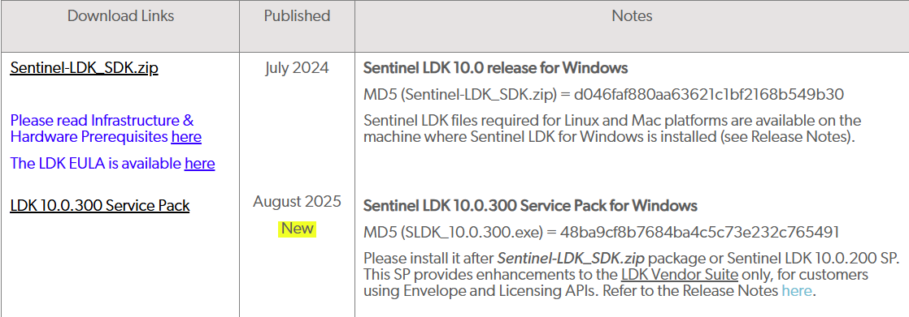
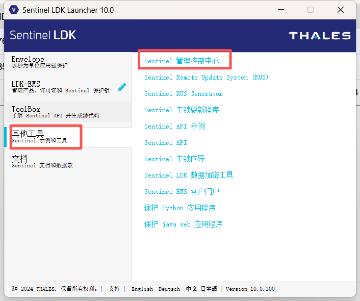

sentinel 加密锁应用
最近使用 sentinel 的加密狗对软件进行加密，整个操作流程还是有一定门槛的，下面对安装到配置进行简要介绍。
下载及安装 sentinel LDK
官网下载地址：Sentinel-LDK_SDK
备用下载：Sentinel-LDK
选择下载最新的 sdk 和升级包：

runtime 包用于客户端安装：
安装最新版 SDK 及升级包，安装过程中注意选择本地模式的 EMS：
配置主锁和产品
启动程序前，插入 master 主锁和一个测试用的子锁。
安装完成后启动 LDK，点击进入 master 主锁向导：
初始默认用户名和密码都是：admin，按照提示下载需要的各种 API 支撑库文件：
注意此处的文件就是主锁的开发商代码文件：
开发商代码文件存放在用户目录下：Documents\Thales\Sentinel LDK 10.0\VendorCodes。
二次开发需要用的 API 库文件存放在用户目录下：Documents\Thales\Sentinel LDK 10.0\API\Licensing。
主锁 API 相关文件下载完成后，点击 LDK-EMS 进入管理界面：
初始默认用户名和密码都是：admin，登录后会提示你需要修改密码。
目录栏中切换到上面主锁向导中定义的开发商代码文件名，默认的 demoma 文件是一个用于测试的虚拟主锁文件：
sentinel 的授权逻辑是：
- 定义产品，唯一的 ID 号
- 每个产品都可以有多个功能，每个功能配置唯一的 ID 号
- sentinel 的加密锁最终是通过功能 ID 号来识别是否授权而不是产品号
所以我们即使有多个软件产品，每个软件产品有多个不同的功能块要授权，不同产品之间的功能块ID也需要不同，这样就不会出错了。
我们做一个示例来说明如何定义一个产品。
假设我们的产品名称为 EnveloGrinding，我们定义一个 login 的功能，用于软件登录的验证。
进入功能选项卡，注意切换开发号到当前主锁的开发商代码名称，点击新功能选项，设置功能名称，以及唯一的功能 ID 号：
点击确认后，此功能就在功能列表中了。
然后进入产品选项卡，同样切换开发号到当前主锁的开发商代码，点击新产品：
设置唯一的产品名称和 ID 号，在页面下方点击添加功能按钮，选择刚才创建的 login 功能：
因为登录功能授权属于最基本的软件授权，所以这里选择此产品总是包含，如果其他更多的功能需要选择性的添加到产品，可以选择可以排除选项，这样再授权的时候就可以灵活组合授权哪些功能。
点击另存为完成后，这个产品就定义成功了。
此时我们给加密锁进行授权，将这个产品写入加密锁中。
首选我们添加客户信息，也就是这个加密狗最终是交付给谁使用的，用于后期管理维护。
客户选项卡点击新客户按钮：
设置好所有信息后点击保存即可。
点击授权选项卡，切换到正确的开发号后，点击新授权：
首先在客户栏输入建立好的客户名称，这里不需要写全部字符，点击旁边的搜索图标，弹窗中点击搜索即可自动提取完整的客户信息。
然后在下方点击添加产品，在弹窗中选择需要授权的产品即可：
点击生成按钮进入最后的流程：
如果已经插入了加密锁，此时会自动识别到下方的框里，选择一个加密锁，点击烧制即可将此产品授权写入加密锁中：
以上就完成了基本的操作流程，此时加密锁已经授权了此产品中对应功能ID的授权。
后续编程中需要对此功能 ID 进行检测，如果匹配即可验证成功。同时需要开发商代码 VendorCodes。
加密锁授权更新
如果需要对一个已经授权过的加密锁进行上面介绍的常规方式进行二次授权，会产生的现象是：以前老的授权功能 ID 依然可用，新的授权功能 ID 也可用。
如果需要擦除老的授权，需要进行以下操作。
点击新授权按钮后，选择保护锁更新，然后点击下方的查找按钮：
点击锁ID，点击查找，在列表中选择需要更新的加密锁，然后点击添加到列表，然后点击确认即可：
点击添加产品，选择当前需要更新的产品，然后点击生成：
在弹窗中选择应用更新前清除锁，点击生成：
此时会显示已生成 V2CP 文件，点击下载 V2CP 文件到本地：
此时我们需要手动将此文件刷入加密锁中。
点击进入控制管理中心：

更新/依附栏选择下载的 V2CP 文件：
点击应用文件可以将新授权刷入加密锁中。
数据库备份与恢复
EMS 数据库存放则产品/功能/授权/用户等重要信息，如果 ems 是本地模式则卸载软件或重装系统后数据就会丢失，所以定期备份数据很重要。
首先需要安装微软的 SQL Server Management Studio (ssms)，官网地址：https://learn.microsoft.com/zh-cn/ssms/install/install，目前最新版为 ssms21。
运行安装包后根据提示安装即可，如果安装失败，可能是系统缺少 Visual C++ runtime 库，需要自行手动安装以下。
下载地址：https://learn.microsoft.com/en-us/cpp/windows/latest-supported-vc-redist
安装 ssms 完成后即可启动 SQL Server Management Studio 应用程序，点击 connect object explorer：
点击 browse 选择 emsdatabase：
下方会自动填入相关信息，authentication 选择 sql server authentication，用户名为 sa，密码为 DBA!sa@EMSDB123,可选保存密码方便下次直接访问，encrypt 选择 optional，设置完成后点击 connect 连接：
备份
进入数据后，打开 databases，在 EMSDB 右键选择 task - backup：
在 general 选项卡按照图片设置，然后点击 add 按钮添加备份文件地址：
media option 中可以设置验证备份：
设置完成后就可以直接按 ok 键备份了。
恢复
恢复方式也很简单，在 EMSDB 右键选择 task - restore - database：
general 栏选择 device，然后点击按钮添加备份文件地址：
在弹窗中点击 add 添加需要恢复的备份文件地址，完成后点击 ok 退出：
此时就会显示从备份文件中读取到的数据库信息，在下方勾选需要恢复的数据库：
这里需要注意的是，恢复 EMSDB 数据库需要先停止 EMS Service，否则会提示恢复失败。
首先 win+R 弹出运行框，然后输入 Services.msc 并确认，打开服务窗口，在其中找到 Sentinel LDK-EMS Service 右键选择 stop 即可关闭此服务：
关闭后回到 ssms，执行 ok 即可恢复此数据库：
恢复完成后，需要重新启动 EMS Service 服务，同样的在 Sentinel LDK-EMS Service 服务右键选择 start 即可。
以上就是 sentinel 加密锁的基本使用方法。
标签：无